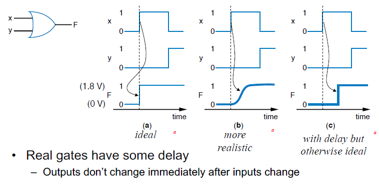

Digital System Circuits Midterm
What does ‘digital’ mean?
Digital signal - signal that at any time one of a finite of possible values
Analog signal or Continuous signal - one of any infinite of possible values
Analog signal -> sampling, quantization, coding -> digital signal
Digital signals with only two values: binary
A single binary signal: binary digit or bit
Typically represented as 0 and 1, on or off
Digital system - takes digital input, generates digital output
Digital circuit - digital components that together comprise a digital system

How to encode text: ASCII, Unicode
ASCII (American Standard Code for Information Interchange)
7- (or 8-) bit encoding of each letter, number, or symbol
Unicode (Universal Code system)
Increasingly popular 16-bit encoding
데이터 교환을 원활하게 하기 위하여 문자 1개에 부여되는 값을 16bit으로 통일
How to encode numbers: binary numbers
Most important use of digital circuit - perform arithmetic computations
to perform arithmetic computation -> encode numbers as bits
Using digital data in a digital system
Converting from binary to decimal
Hexadecimal, hex

Bytes, Kilobytes, Megabytes, and more
1 Byte = 8 bits
1KB = \(2^{10}\) bytes
KB for kilobyte vs. Kb for kilobit
Implementing digital systems: programming microprocessors vs. designing digital circuits
Digital design: When microprocessors aren’t good enough
With Microprocessors so easy, cheap, and available, why design a digital circuit?
- Microprocessor may be to slow
- or too big, power hungry, or costly
Commonly, designers partition a system among a microprocessor and custom digital circuits

Microprocessors (themselves digital) can implement many digital systems easily and inexpensively
- but often not good enough-need custom digital circuits
Switches
Electronic switches are the basis of binary digital circuits
Voltage - difference in electric potential between two points
Resistance - tendency of wire to resist current flow
Current - flow of charged particles
A switch has three parts
- Source input, and output - current tries to flow from source input to output
- Control input - voltage that controls whether that current can flow
The CMOS transistor
Basic switch in modern ICs
Boolean logic gates - building blocks for digital circuits
Logic gates are better digital circuit building blocks than switches (transistors)
Boolean Algebra and its relation to digital circuits
Variables represent 0 or 1 only
Operators return 0 or 1 only
Basic operators
- AND
- OR
- NOT
Relating Boolean Algebra to digital design
NOT gate
OR gate
AND gate
Example that applies Boolean Algebra properties
Truth table representation of Boolean functions
Define value for F for each possible combination of input values
- 2-input function: 4 rows
- 3-input function: 8 rows
- 4-input function: 16 rows
Converting among representations
Converting from truth table to equation
Parity bit - Extra bit added to data, intended to enable detection of error (a bit changed unintentionally)
Even parity - set parity bit so total number of 1s (data + parity) is even
Standard representation: Truth table
Only one truth table representation of a given function
- Standard representation-for given function, only one version in standard form exists
Canonical form - sum of minterms
Truth table too big for numerous inputs
Use standard form of equation instead
- Known as canonical form
- Boolean algebra - create sum of minterms
- minterms - product term with every function literal appearing exactly once, in true or complemented form
- Just multiply-out equation until sum of product terms
- Then expand each term until all terms are minterms
Combinational logic design process
- Capture behavior - Capture the function
Create a truth table or equations, whichever is most natural for the given problem, to describe the desired behavior of each output of the combinational logic.
Convert to circuit
Create equations
This substep is only necessary if you captured the function using a truth table instead of equations. Create an equation for each output by ORing all the minterms for that output. Simplify the equations if desired.
Implement as a get-based circuit
For each output, create a circuit corresponding to the output’s equation. (Sharing gates among multiple outputs is OK optionally)
Example: Keypad converter
Example: Sprinkler controller
More gates
NAND - Opposite of AND
NOR - Opposite of OR
XOR - Exactly 1 input is 1, for 2-input XOR
XNOR - Opposite of XOR (‘NOT XOR’)
Completeness of NAND
Any boolean function can be implemented using just NAND gates.
- NOT - 1-input NAND
- AND - NAND followed by NOT
- OR - NAND preceded by NOTs
Number of possible boolean functions
Decoders and Muxes
Decoder - popular combinational logic building block, in addition to logic gates
- Convert input binary number to one high output
- 2-input decoder: four possible input binary numbers
- n-input decoder: \(2^{n}\) outputs
Multiplexor (Mux)
Routes one of its N data inputs to its one output, based on binary value of select inputs
- 4 input mux -> needs 2 select inputs to indicate which input to route through
- 8 input mux -> 3 select inputs
- N inputs -> \(\log_{2}{N}\) selects
Additional considerations - non-ideal gate behavior - delay

Circuit delay and critical path
Active low inputs
Data inputs - flow through component
Control input - influence component behavior
- Normally active high - 1 causes input to carry out its purpose
- Active low - Instead, 0 causes input to carry out its purpose
Schematic capture and simulation
Schematic capture - computer tool for user to capture logic circuit graphically
Simulator - computer tool to show what circuit outputs would be for given inputs
- outputs commonly displayed as waveform
Boolean algebra properties
Example that applies Boolean algebra properties
Example applying DeMorgan’s Law
Example applying properties
Complement of a function
Introduction to optimization of digital logic design
Delay - the time from inputs changing to new correct stable output
Size - the number of transistors
Tradeoff
Improves some, but worsens other, criteria of interest
Optimization and tradeoff
Combinational logic optimization and tradeoffs
Two-level size optimization using algebraic methods
- Sum-of-products yield two levels
- Transform sum-of-products equation to have fewest literals and terms
Karnaugh maps for two-level size optimization
Easy to miss possible opportunities to combine terms when doing algebraically
Karnaugh Maps (K-maps)
- Graphical method to help us find opportunities to combine terms
- Minterms differing in one variable are adjacent in the map
- Can clearly see opportunities to combine terms

General K-map method
- Convert the function’s equation into sum-of-minterms form
- Place 1s in the appropriate K-map cells for each minterm
- Cover all 1s by drawing the fewest largest circles, with every 1 included at least once; write the corresponding term for each circle
- OR all the resulting terms to create the minimized function
Don’t care input combinations
What if we know that particular input combinations can never occur?
- On K-map
- Draw Xs for don’t care combinations
- Include X in circle ONLY if minimizes equation
- Don’t include other Xs
- Draw Xs for don’t care combinations
Digital design process
Specification - planning - design entry - functional test - synthesis - post-synthesis test - APR, Parasitic Extraction & Timing checks - Manufacture & hardware validation
What is an HDL?
HDL = Hardware Description Language
- Allows for modeling & simulation (with timing) of digital design
- Can be synthesized into hardware (netlist) by synthesis tools (Synopsys, Ambit, FPGA compilers)
- Two major standard in industry & academia
- Verilog - flexible, loose, more common
- VHDL - strongly typed, more common in defense and automotive
- It looks like a programming language.
- It is not a programming language.
- It is always critical to recall you are describing hardware.
- This code’s primary purpose is to generate hardware.
- The hardware this code describes (a counter) can be simulated on a computer. In this secondary use of the language, it does act more like programming language.
Simulating/Validating HDL
What is synthesis?
- Takes a description of what a circuit does.
- Creates the hardware to do it.
Synthesizing the hardware described
- All hardware created during synthesis
Why use an HDL?
Enables larger design via rich syntax, modularity
- more abstract than schematics, allows larger designs
- register transfer level description
- wide datapath can be abstracted to a single vector
- synthesis tool does the bulk of the tedious repetitive work vs. schematic capture
- Work at transistor/gate level for large designs - cumbersome
Portable design
Behavioral or dataflow Verilog can be synthesized to a new process library with little effort.
Verilog written in ASCII text. The ultimate in portability. Much more portable than the binary files of a GUI schematic capture tool.
Explore large solution space
Synthesis options can help optimize (power, area, speed)
Synthesis options and coding styles can help examine tradeoffs
- speed
- power
- area
Better validated designs
- Verilog itself is used to create the testbench
- flexible method that allows self checking tests
- unified environment
- synthesis tools are very good from the boolean correctness point of view
- if you have a logic error in your final design there is a 99.999% change that error exists in your behavioral code
- error caused in synthesis fall in the following categories
- timing
- bad library definitions
- bad coding style
Other important HDL features
- Are highly portable (text)
- Are self-documenting (when commented well)
- Describe multiple levels of abstraction
- Represent parallelism
- Provides many descriptive styles
- structural
- register transfer level (RTL)
- behavioral
- Serve as input for synthesis tools
Hardware implementations
HDLs can be compiled to semi-custom and programmable hardware implementations
Standard cells
Library of common gates and structures (cells)
Decompose hardware in terms of these cells
Arrange the cells on the chip
Connect them using metal wiring
FPGAs
Programmable hardware
Use small memories as truth tables of functions
Decompose circuit into these blocks
Connect using programmable routing
SRAM bits control functionally
What is a Netlist?
A netlist is a ASCII text representation of the interconnect of a schematic.
Many standard exists
- Spice netlist
- EDIF (Electronic Data Interchange Format)
- Structural Verilog Netlist
Combinational logic
Since HDLs try to abstract hardware design, do we even have to consider the hardware?
- Good hardware design requires ability to analyze a problem to find simplifications
- Multiple variables: throughput, area, latency, power
- Finding an optimal hardware implementation is a computationally complex problem. This synthesis tools need guidance on where to start.